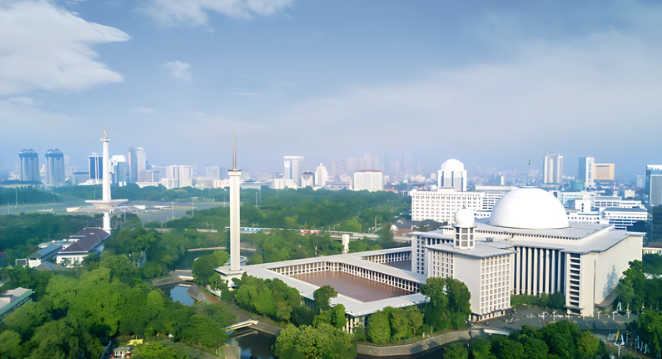
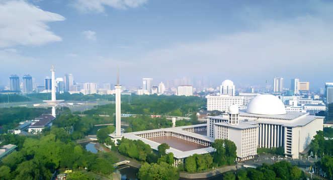

🕌 Eco-Masjid Certification
The first program in Bangladesh to certify mosques based on eco-friendly practices, including water-saving, energy efficiency, and green space integration.
To build a climate-conscious, spiritually driven society where faith inspires action for environmental justice, sustainability, and innovation — in Bangladesh and beyond.
To become a leading faith-based environmental movement that revives the prophetic legacy of ecological balance and compassion in Bangladesh and beyond.
Through:
We strive to build a climate-resilient, ethically guided society, deeply rooted in Islamic values.
The first program in Bangladesh to certify mosques based on eco-friendly practices, including water-saving, energy efficiency, and green space integration.
We promote clean, ethical Qurbani practices and support Imams with eco-sermon materials.
Planting trees in polluted urban areas, especially around campuses and mosques, to improve air quality and promote environmental healing.

To turn them into environmentally responsible hubs of worship and learning.
Our AI tools are used for:
We aim to leverage technology for a greener, more sustainable future.